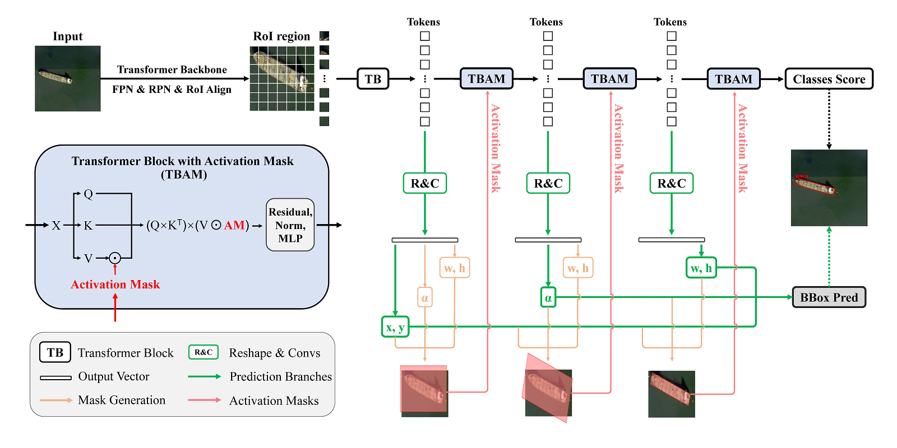

俞洪田博士研究生
|

|
俞洪田博士研究生
|
|
我是中国科学院大学电子电气与通信工程学院机器学习与感知实验室（LAMP）的在读博士研究生，师从叶齐祥教授和刘云帆博士后。我在2021年6月获得了中国科学院大学工学学士学位。
我的研究方向是计算机视觉领域的目标检测和表征学习。
|  |
Spatial Transform Decoupling for Oriented Object Detection
Hongtian Yu, Yunjie Tian, Qixiang Ye, Yunfan Liu The 38th Annual AAAI Conference on Artificial Intelligence, 2024 [论文] [arXiv] [代码] |
 |
VMamba: Visual State Space Model
Yue Liu, Yunjie Tian, Yuzhong Zhao, Hongtian Yu, Lingxi Xie, Yaowei Wang, Qixiang Ye, Yunfan Liu [arXiv] [代码] [旋转目标检测应用示例] |